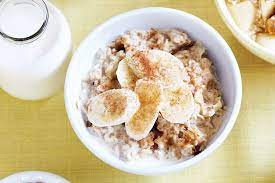

Finnish Porridge for two

Description
Healthy Finnish-style porridge with cinnamon and banana.
Ingredients
- Oats 80-120g
- Salt (optional)
- Sugar (optional)
- Banana 1
- Cinnamon
Steps
- Boil water and add little bit salt to the water. Amount of water should be approximately 2.5dl per 40g of oats.
- Add oats to the water. Stir from time to time to avoid burning the porridge. Reduce heat so boiling is minimal.
- After a while (2-10 min, depending on Oats type) take the pot off oven.
- Serve porridge to bowls. Add chopped banana, cinnamon and sugar on top according to own taste.